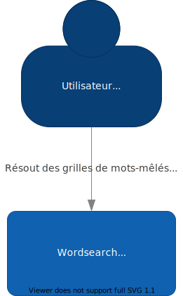

Le contexte du système
Ce diagramme montre le contexte du système, c’est-à-dire les interactions entre le système et des acteurs/systèmes externes.

Ce diagramme montre le contexte du système, c’est-à-dire les interactions entre le système et des acteurs/systèmes externes.